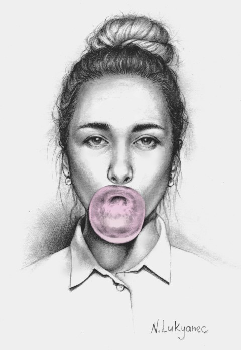
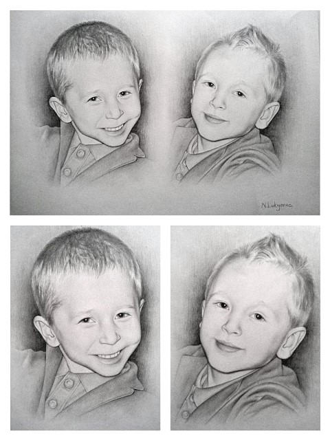
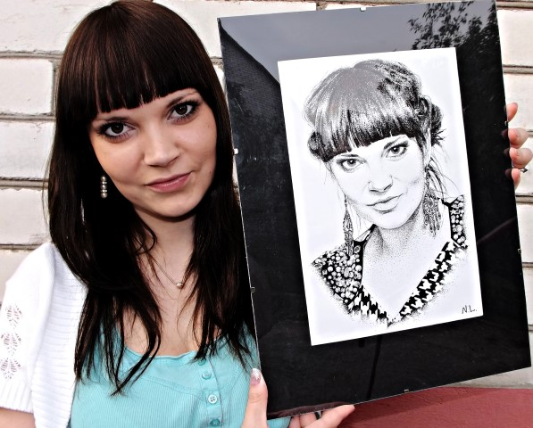
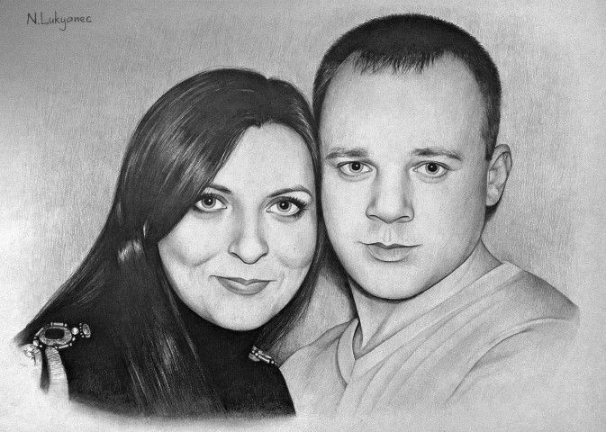
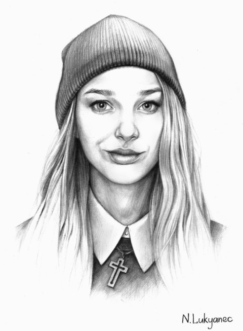
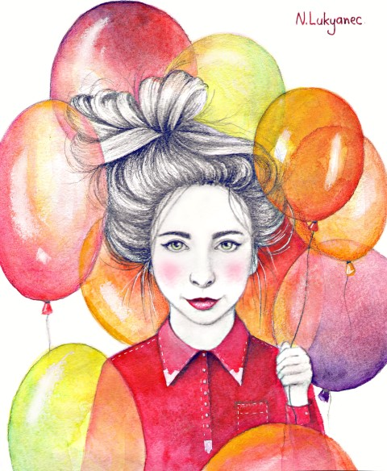

Талантливая художница из Браслава Наталья Лукьянец: «Творите - и все мечты исполнятся!»

С этой талантливой девушкой я познакомился в интернете после того, как случайно увидел у кого-то на странице красивые портреты, нарисованные карандашом. Молодая художник-дизайнер Наталья Лукьянец начала рисовать уже в детстве, и сегодня достигла огромных успехов. Браслав.бай побеседовал с ней о таком чудесном хобби, узнал, чем девушка интересуется и какие у нее планы на будущее.
- Наташа, откуда такая жажда к рисованию? Когда ты впервые взяла в руки карандаш и кисть?
- Рисую с детства, сколько себя помню, столько и рисую. Мама рассказывала, что ещё говорила я не особо хорошо, но уже переводила своими каракулями стопки листов. С 1-го класса посещала кружок ИЗО и многие другие при ЦДТ.
Как и многие, по окончанию школы мои планы и стремления были нацелены на столицу нашей Родины - Минск. С простой, а не художественной школы, нужно было обладать каким-то выдающимся сверхталантом, чтобы вот так, сходу, поступить в тот творческий ВУЗ, на который я была нацелена и о котором мечтала - Академия искусств. Поэтому по совету одного минского художника и дизайнера, у которого на тот момент проходила выставка в Браславе, и конечно благодаря огромной поддержке моей мамы, которая твёрдо решила ,что поступать я буду туда, куда хочу и на кого хочу, а не для того чтобы просто поступить куда-то, я решилась на годичные подготовительные курсы при Академии искусств. На тот момент я мечтала стать дизайнером интерьеров , готовилась к поступлению, училась и подрабатывала одновременно.

- И как сложились обстоятельства с поступлением?
- По итогу в Академию я не поступила, подвёл средний балл по тестам, но курсы дали многое - в плане академического рисунка и живописи это был огромный опыт и педагоги там - мастера своего дела. Не пройдя, я немного расстроилась, но решила продолжать подготовку и поступать в Академию.
Большинство тех, кто не прошёл, пошли подавать документы в другие ВУЗы, т.к в Академии раньше всех проходила вступительная комиссия. И по совету одной приятельницы по курсам я просто, безо всякого желания, подала вместе с ней документы в БГУ по специальности «Дизайн предметно-пространственной среды», о чём, вот именно сейчас, я ни капельки не жалею.
С наивысшими оценками по творческому экзамену поступила. Когда узнала что прошла, долго плакала из-за того что это была не Академия, о которой я так мечтала. Кстати, именно сейчас понимаю, что это был его величество случай, который решил всё. В академии я бы была интерьерщиком, а на втором курсе БГУ я поняла, что это вообще не моё, и что это не то, с чем бы я хотела связать свою жизнь. В БГУ мы изучали все направления дизайна и там я поняла, что графический дизайн - это вещь!

- А как ты пришла к портретам карандашом?
- По правде говоря, если бы мне кто-то сказал лет 5-6 назад, что я буду рисовать портреты и это будет, как минимум, мне нравиться, ни за чтобы не поверила. Когда училась на 2 курсе мы рисовали гипсовые головы, мне это жутко не нравилось, все они были для меня какими-то однотипными, неживыми, да и сам академизм душил. А вот на 3 курсе мы начали рисовать натуру и с приходом нового преподавателя по рисунку Селиханова Константина, произошли кардинальные перемены в моём отношении к этому предмету. Он дал нам такую волю в рисунке, что от этого я начала получать настоящий кайф.
Потом рисунок и живопись закончились. Но как-то в один прекрасный день на меня нашла такая тоска по рисунку, и вместе с тем непреодолимое желание кого-нибудь нарисовать, достала карандаши, подготовила планшет, натянула бумагу, открыла краски и нарисовала свою соседку по квартире. Не думала что получиться,но она была в восторге.
И потом как-то всё закрутилось само собой: то другу на день рождения портрет в подарок, то подруге, то себя в разных образах, то просто душевный порыв и кого-то из знаменитостей. У меня получалось и я продолжала рисовать , поначалу даже себя больше рисовала.

Потом начали обращаться и совершенно незнакомые люди с просьбой нарисовать их портрет или их друзей и близких. Мне это безумно нравилось, я могла сидеть сутками и рисовать, кстати, так и до сих, я рисую преимущественно в вечернее или ночное время, меня ничто не отвлекает, да и как-то большинство идей приходит именно в это время суток, за эти ночные посиделки меня частенько и ругают родные.

Дальше мой молодой человек создал сообщество в социальной сети «вконтакте» и я стала выкладывать некоторые из работ и потихоньку туда стали добавляться люди. Безумно приятно, когда знакомые и незнакомые люди бывает подходят на улице и выражают своё восхищение моим творчеством , это дорогого стоит, после такого прихожу и рисую как сумасшедшая.

- К какой технике рисования себя относишь?
- Скорее всего я отнесу себя больше к графикам, так как я получаю истинное удовольствия от работы с карандашом в рисунке, большой поклонник «зернистой» техники рисования - точками , попросту говоря, а также в последнее время мне понравилось работать с углём. На мой взгляд , работы выполненные карандашом и точками, выглядят более реалистичными, проработанными и с помощью их мне удаётся добиться максимальной схожести с характером человека на фото. Бывали даже случаи, когда я приносила работу и меня спрашивали : «Это фотография?» Считаю это наивысшей оценкой моей работы раз она столь схожа с оригиналом. Хоть я и страстный поклонник чёрно-белых работ, иногда не прочь пописать и акварелью или порисовать цветными карандашами, но это бывает редко.
Хоть я и страстный поклонник чёрно-белых работ, иногда не прочь пописать и акварелью или порисовать цветными карандашами, но это бывает редко.
Больше всего люблю рисовать портреты людей. Мне нравиться наблюдать за их мимикой, геометрией, асимметрией, формой и пропорциями лица, соотносить их и анализировать. Каждый человек ведь особенный, и его черты лица уникальны и неповторимы. Временами пишу натюрморты, абстрактные и композиционные работы, но это уже как вдохновение захлестнёт.
- А какие планы у тебя на будущее, если не секрет?
- В планах собраться с силами и организовать выставку своих работ в Браславе. К исполнению некоторых идей и задуманного уже приступила, надеюсь в этом году всё успеть и осуществить мечту. Ну а также реализоваться как дизайнер и пополнить своё портфолио в этой сфере.

- Что пожелаешь нашим читателям?
- Найдите то, что приносит вам истинное удовольствие и счастье, то, чем вы готовы заниматься часами, днями напролёт и погружаться в это целиком и полностью. Ведь жизнь одна и, мне кажется, грустно прожить её делая то, что вам не по душе и не приносит никого счастья. Ведь мы можем всё, стоит только захотеть. Да и хочется просто сказать: «Мечтайте! Любите! Действуйте! Будьте добрее! И всё получится!».